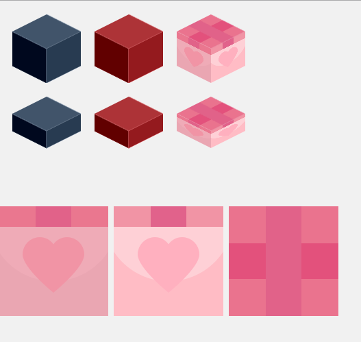

DrawCube
用Canvas绘制正方体，其中三个面可用纯色或者图片，可以设定立方体的宽和高，最终返回生成好的Canvas元素。
/**
* 绘制正方体
* @param {Number} l 宽
* @param {Number} h 高
* @param {String|Object} key 颜色代码或三个面的图片
* @return {Canvas Element} 生成好的Canvas元素
*/
function drawCube(l, h, key) {···}
示例
引入drawCube.js
<script src="drawCube.js"></script>
HTML结构
<canvas width="800" height="300" id="canvas"></canvas>
<img src="assets/left.png" alt="" id="left">
<img src="assets/right.png" alt="" id="right">
<img src="assets/top.png" alt="" id="top">
使用纯色绘制
drawCube(100, 100, "#7A0004");
使用图片绘制
var left = document.getElementById("left");
var right = document.getElementById("right");
var top = document.getElementById("top");
drawCube(100, 100, {left: left, right: right, top: top});
最终结果

详情
完整示例请查看 DEMO
详情请查看 Github